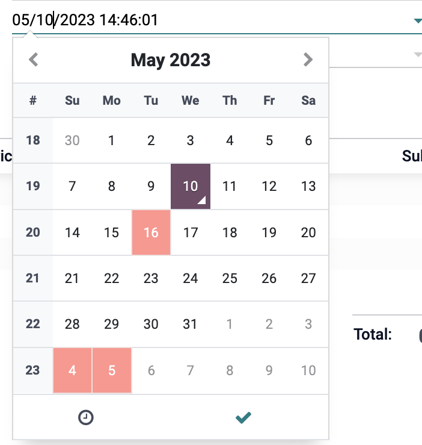

<section class="oe_container">
    <div class="oe_row oe_spaced">
        <h2 class="oe_slogan" style="color:#875A7B;">Public Holiday Calender & Datepicker Setter</h2>
        <h3 class="oe_slogan">Simpy set public holidays from time off panel.</h3>
        <h3 class="oe_slogan">By installing this module holidays colors will change to red in datepicker and
            calendar.</h3>
        <div class="oe_demo oe_picture oe_screenshot">
            <h2 class="oe_slogan" style="color:#875A7B;">Screenshots</h2>
            
            <b/>
            
        </div>
    </div>
</section>
